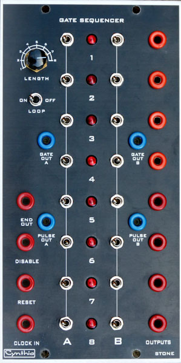
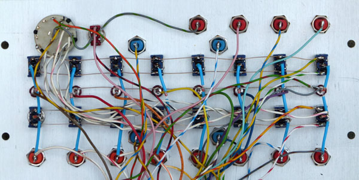

|

Gate Sequencer The CGS89 is a sequencer designed for delivering pulsed or gated events, for rhythm and percussion, triggering other sequencers, or selecting stages in Programmers such as the Serge R15 PRG. It can be used as a replacement for the first generation Serge R10 SEQ Sequencer. How to use this module: The main function of the board is as a sequential pulse generator. When clocked by an external source, each of its outputs will come on one after the other. This can be used to sequentially trigger up to ten events. An example would be to set the number of steps to 2, then connect outputs 1 and 2 to two drum sound generators. A pulse train fed to the clock input would then produce a drum roll alternating between the two drum sounds. When coupled with a switch bank and the onboard buffers, rhythms of up to ten steps can be created. There are two onboard buffers, giving two separate channels. While these outputs can be used to trigger drum sounds, that is not their only use. They can be used to trigger envelope generators, step waves in wave tables, drive other sequencers etc. Once you have a gate sequencer in your modular, you will wonder how you ever survived without it. Multiple gate sequencers can also cascaded for longer rhythm lengths, or more channels. To cascade the outputs of several units, simply connect the "Full Out/Mix Out" and "Pulse Out" outputs on the first unit to the corresponding outputs on the second unit and so on. That is right, this module has been designed so it's outputs can be connected together with its other outputs, or outputs of other CGS89 gate sequencers via wire ORing. Experiment with it. To the right: The prototype was built behind a Cynthia Gate Sequencer panel. A little on how it works: First we will consider the main section of the board.
The schematic of the main part of the Gate Sequencer. An LM339 comparator is used to shape the input signals. These take whatever signal is fed into the module and convert them to signals appropriate for driving the rest of the circuitry. With the values given, the sensitivity is set at around 2V, allowing triggering from signals with a +/- 5 volt swing, or with a 0V to +10 volt swing, both of which are common in modular synths. The output waveforms of some modules will never fall below the 1.4V level, preventing triggering. Pad identification:
Functional descriptions:
Each of the outputs of the 4017 are buffered with a transistor wired as an emitter follower. Any general purpose NPN transistor will work here. I use the BC547 because it is the most common transistor in Australia. This buffer drives an LED to display which step is active, as well as the individual outputs for each step.
The schematic of the switch matrix and buffers of the Gate Sequencer. Pad identification:
SPDT Center-off switches are used to allow each step to be either the full length of the clock cycle, or gated with the incoming clock pulse. Varying the mark-space ratio of the clock signal can thus be used to vary the length of the output pulses. The channel outputs F1, F2 (full step length for channel 1, 2) and P1, P2 (partial step length for channel 1,2) are then fed back to the onboard buffers for processing. Note that diodes are needed for each switch and need to be mounted off-board. All switched signals, both full length and pulses, are mixed and sent to the corresponding Full/Mix output. Pulses are present at the Pulse output for all stages for which a switch is not off, i.e., if the switch is set to full, or pulse for a particular stage, there will be a corresponding pulse at the Pulse output.
A timing example from the Gate Sequencer. In this example, the clock signal has a 50% mark/space ratio.
Other ideas
Construction
Before you start assembly, check the board for etching faults. Look for any shorts between tracks, or open circuits due to over etching. Take this opportunity to sand the edges of the board if needed, removing any splinters or rough edges. When you are happy with the printed circuit board, construction can proceed as normal, starting with the resistors first, followed by the IC sockets if used, then moving onto the taller components. Take particular care with the orientation of the polarized components, such as electrolytics, diodes, transistors and ICs. When inserting the ICs in their sockets, take care not to accidentally bend any of the pins under the chip. Also, make sure the notch on the chip is aligned with the notch marked on the PCB overlay. Note the two parts marked in blue on the diagram above. Install a 4k7 in place of the 10k. Install a link instead of the diode. These parts are used to determine the gate output voltages. With a 10k installed, the minimum gate voltage is over 5 volts. The diode was to compensate for the different "High" voltages generated by the two types of output chip. If you find your non-switched outputs higher than the switched ones, the diode can be installed. In the prototype, I found it was not needed, so a link was added across the back of the diode. It may be more convenient to build it this way in the first place. Install the diode, then fold one of its the leads back across to the other pad, trim and solder it in place. That way, if you find you do need the diode, it is a simple matter of cutting off the shorting link. Select RLED to suit your LEDs. In this case, the LEDs will be driven from 5 volts. The prototype used 1k resistors with high-brightness RED LEDs. Resistors RY current limit the output, and are part of the wire-OR gate configuration. The prototype used 2 x 1k.
If using banana jacks colored to Serge standards, I would suggest the use of orange jacks for all outputs, to indicate they are a non-standard outputs capable of being wire ORed. (ORange seems appropriate!)
Set UpThere is a single trimmer that needs adjustment. With the unit powered, monitor the output voltage of the active stage (with reference to 0V) and adjust the trimmer until it reads 5V. Turn the corresponding stage switch to FULL and measure the FULL/MIX output. The voltage should be around the same voltage, although it will not be exact. If it is less that 4.5 volts, install the diode marked in blue on the PCB then re-adjust for 5V. 
Notes:
Parts list This is a guide only. Parts needed will vary with individual constructor's needs. Parts within the boxed area can be omitted if the switched outputs are not required. Check the PCBs for Sale page to see if I have any in stock.
Can't find the parts? See the parts FAQ to see if I've already answered the question. Also see the CGS Synth discussion group.
Article, art & design copyright 2001 by Ken Stone
| |||||||||||||||||||||||||||||||||||||||||||||||||||||||||||||||||||||||||||||||||||||||||||||||||||||||||||||